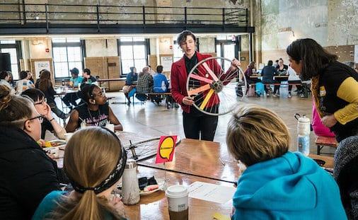

If you're an experienced cyclist, be mindful of inexperienced riders out on the roads. Be available to assist them if necessary; other riders will appreciate any time given to assist them with minor bike repairs. Use your prior experience and knowledge responsibly to involve others within the Pittsburgh cycling community. Be mindful of others' backgrounds and make an effort to include cyclists from more marginalized backgrounds when repairing your own or their own bicycles. For some adivce as to what this looks like with regards to gender and sexuality, you can go to BikePGH's website, which has a useful infographic on the subject.
Source: Allegheny Front
Below are some resources to learn more about local cycling groups in Pittburgh with a focus around inclusion that you can support or get involved with yourself:
At the end of the day, the key ideas to remember are to be willing to listen to others and respect them and their experiences. Keep an open mind while interacting with other cyclists and help to establish a sense of belonging for them, both when it comes to repairs and biking in general.
Source: WMNBikePGH